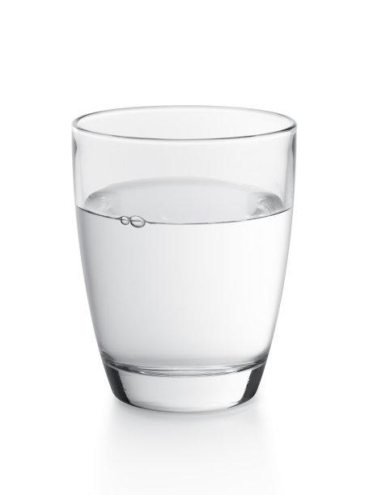
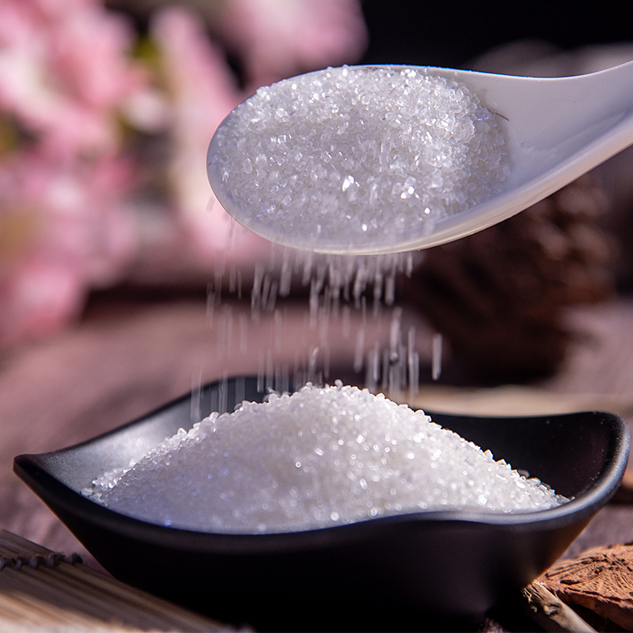
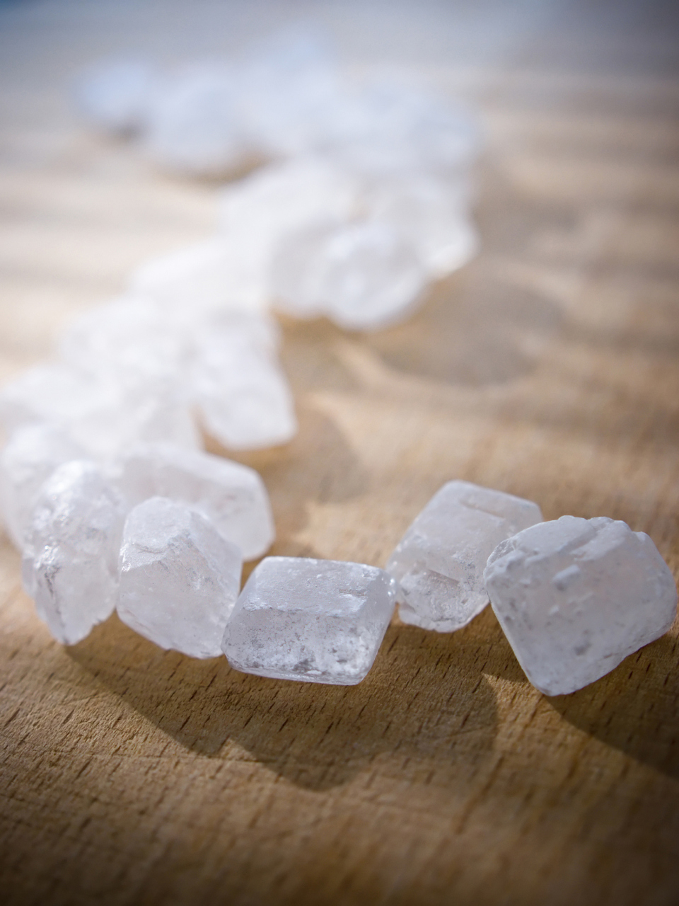
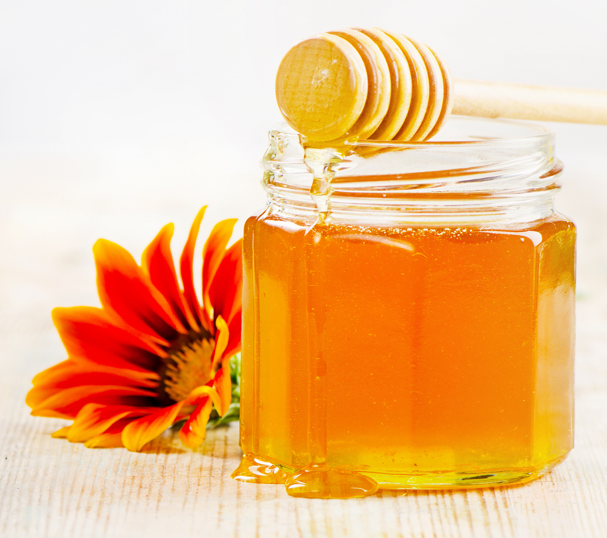
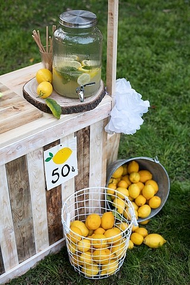

What You'll Need
Gather these fresh and simple ingredients to create the perfect glass of lemonade.

Fresh Lemons
The star of the show! About 4-6 medium-sized lemons are needed for a standard pitcher.

Water
Use cold, filtered water for the best taste. You'll need about 4 cups.

Sugar
Granulated sugar works best. Start with 1 cup and adjust to your preferred sweetness.

Ice Cubes
Optional, but highly recommended for a refreshing, chilled drink.

Fresh Mint (Garnish)
A few sprigs of fresh mint add a wonderful aroma and a touch of color.

Honey (Optional)
For a natural sweetener, honey is a great alternative to sugar. Use to taste.

Lemonade Stand (Optional)
If you're making this for a party or gathering, a lemonade stand makes a great presentation!